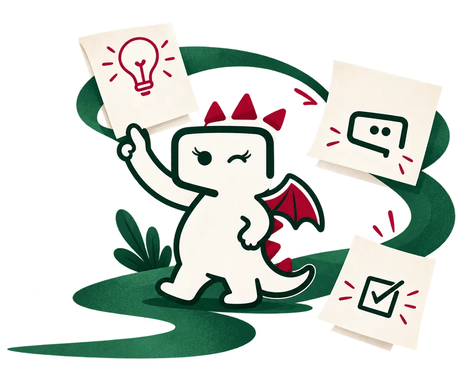
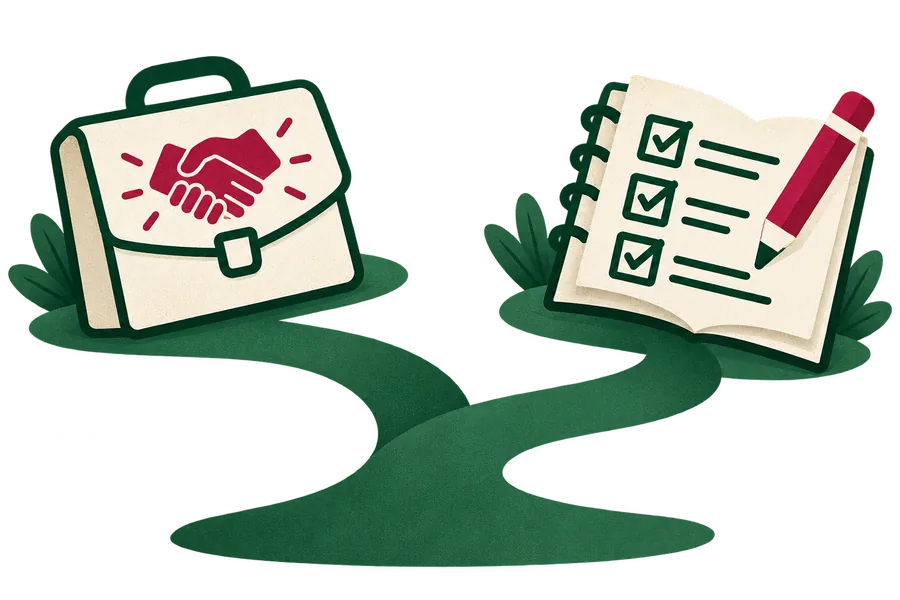
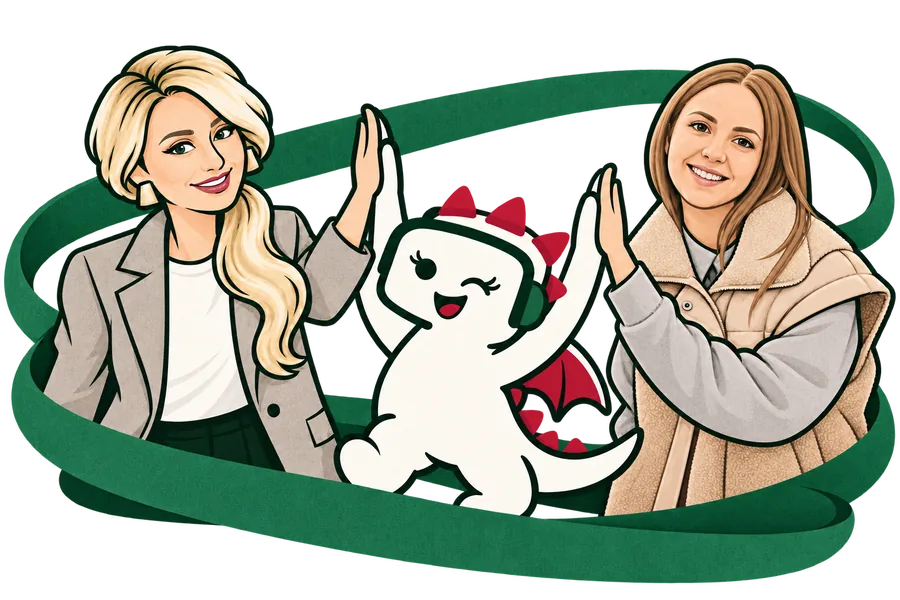

Как зарабатывать на ИИ-ботах
Что можно создавать, кому предлагать и за какой результат может платить заказчик.
Разберитесь, каких ИИ-ботов можно создавать на заказ и какие задачи поручать им в своей работе.

ИдеяПомощникГотовоеДва взгляда
на возможности ИИ-ботов
Что можно создавать, кому предлагать и за какой результат может платить заказчик.
Какие задачи можно поручить ИИ и как выбрать помощника под свои потребности.
Оба урока получите сразу после регистрации.
Начните с того, что сейчас ближе вашей цели.
От готового примера — к пониманию, как сделать своё решение.
Посмотрим, какие задачи решают ИИ-боты. На живом примере разберём настройку и проверку помощника.
Разберём задачи заказчиков, варианты услуг и результат, за который могут платить. Покажем применение для себя.
Обсудим выбор первой задачи, подготовку примера и следующие шаги для работы с MyBotica.
В конце расскажем о доступе к платформе и условиях дальнейшей работы. На эфире можно будет задать вопросы.
7 ноября · 12:00 МСК
Хочется понять, что можно превратить в доход, а что — уже сейчас использовать в своей работе.

Выберите задачу заказчика и посмотрите, как работает помощник, которого можно настроить под его работу.
Один и тот же тип помощника может пригодиться вам — или стать решением для заказчика.
Ищете своё применение ИИ.
Для новых услуг и собственных задач.
Посмотрите, какие решения можно предлагать и кому они могут пригодиться.
Разберитесь, из чего состоит работа с ИИ-ботами: от задачи до настройки и проверки.
Увидите, какую услугу можно добавить к тому, что вы уже делаете.
Выберите повседневные и рабочие задачи, которые хочется попробовать поручить ИИ.
7 ноября · 12:00 МСК
От знакомой задачи — к помощнику, которого можно создать для себя или заказчика.
«Вот мои заметки о курсе. Помоги собрать из них пост».
Хотите разобраться в ИИ-ботах? Начните с одной понятной задачи. На примерах посмотрим, как помощник может пригодиться в работе.
Текст, который можно доработать под свой стильНастроить помощника под темы, продукты и стиль заказчика. Предлагать его как отдельную услугу или дополнение к работе с контентом.
Превращать свои заметки и материалы в черновики публикаций.
Пример задачи. На эфире покажем готовых ботов и разберём, как устроены такие решения.
«Как подготовиться к первой консультации?»
Опишите задачу, которую хотите разобрать, и подготовьте вопросы. Если есть материалы по теме, приложите их к обращению.
Ответы опираются на информацию о вашем проектеНастроить помощника, который отвечает на частые вопросы об услугах эксперта или компании.
Передать помощнику повторяющиеся вопросы о своём проекте.
Пример задачи. На эфире покажем готовых ботов и разберём, как устроены такие решения.
«Где у нас инструкция по возврату заказа?»
В загруженных документах есть инструкция по возвратам. Помощник находит нужный фрагмент и помогает разобраться в порядке действий.
Работа с материалами, которые вы добавилиСоздать помощника по инструкциям и базе знаний команды. Настроить его под конкретные рабочие процессы.
Находить нужную информацию в своих документах, уроках и заметках.
Пример задачи. На эфире покажем готовых ботов и разберём, как устроены такие решения.
7 ноября · 12:00 МСК

Сооснователь MyBotica
Ведёт эфир 7 ноября и показывает, как применять ИИ-ботов.
CEO MyBotica
Делится полезными материалами и помогает разобраться до эфира.
После регистрации заберите видео в боте и познакомьтесь с вариантами применения.
До эфира будем показывать готовых ботов и разбирать задачи, которые они решают.
В 12:00 МСК подключайтесь к живому эфиру: посмотрите демонстрацию и задайте вопросы.
Два видеоурока — сразу после регистрации
Да. На примерах можно будет разобраться в вариантах и выбрать задачу, которую хочется попробовать.
Применение для собственных задач входит в программу. В подарок вы получите отдельный урок об этом.
7 ноября 2026 года, начало в 12:00 по московскому времени. Встречаемся онлайн.
После регистрации перейдите в бота. Там будут материалы и приглашение в канал.
Для новых услуг, работы с заказчиками
и собственных задач.
Уроки получите сразу после регистрации.
Живой эфир — 7 ноября, 12:00 МСК.
Предварительная версия. Регистрация пока не подключена, данные не собираются.